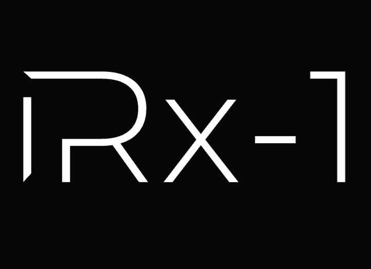

IRx model family
Small chat models that run entirely on your device — no internet, no account, and nothing you type ever leaves it. Fine-tuned with MLX on a single Mac, shipped as MLX and GGUF.
Pick a model & download
Not sure? Start with IRx-2. GGUF files work in PocketPal (iPhone, iPad, Android), LM Studio, Ollama and llama.cpp; MLX builds are for Apple Silicon Macs.
IRx-mini
Smallest. Simple, quick answers on 4GB-RAM phones.
- Download
- ~1.1 GB
- File
- Q8_0
- Min. RAM
- 4 GB
IRx-1
Fast everyday answers on almost any phone.
- Download
- ~1.2 GB
- File
- Q4_K_M
- Min. RAM
- Most phones
Benchmarks
Generation speed measured with llama.cpp on the same Mac CPU (higher is faster), as reported on the model cards. IRx-1 measured 51–54 tokens/s across two runs.
| Model | Speed (tokens/s) | Download | RAM while running |
|---|---|---|---|
| IRx-mini | ~89 | ~1.1 GB | ~1.3 GB |
| IRx-1 | ~52 | ~1.2 GB | — |
| IRx-2 | ~26 | ~2.7 GB | ~3.5 GB |
| IRx-2 Pro | ~24 | ~5.3 GB | ~6 GB |
Quality: before each weekly publish, every build must pass an automated behaviour check — repeated 8-turn conversations with repeat penalty off, with no loops, no copied answers, no hidden reasoning and correct identity. With the built-in news digest, answers about digest headlines contained the real facts 47% of the time versus 0% for news learned through training alone (Oct 2026 test). These are small models: they will not match large hosted models on hard reasoning, and facts can be wrong — double-check anything important. Academic benchmark scores are not listed because they have not been measured.
Quick start
- Install PocketPal (iPhone, iPad or Android) or LM Studio.
- Download the GGUF file for your model from the table above.
- Load it and chat. Turn off tool/function-calling for this model — it was never trained for it.
huggingface-cli download ikppramesh/irx-2-GGUF irx-2-Q4_K_M.gguf --local-dir .
llama-cli -m irx-2-Q4_K_M.gguf --jinja -c 8192 -p "How do I convert Celsius to Fahrenheit?"pip install mlx-lm
from mlx_lm import load, generate
model, tokenizer = load("ikppramesh/irx-2")
messages = [{"role": "user", "content": "How do I convert Celsius to Fahrenheit?"}]
prompt = tokenizer.apply_chat_template(
messages, add_generation_prompt=True, tokenize=False, enable_thinking=False)
print(generate(model, tokenizer, prompt=prompt, max_tokens=200))Good to know
- Fully offline — no account, nothing leaves your device.
- Rebuilt weekly with a built-in news digest; it can't look anything up beyond its stated news date.
- Limits: not a frontier model; not a substitute for medical, legal or financial professionals.
- Apache 2.0 licensed — see the license note.